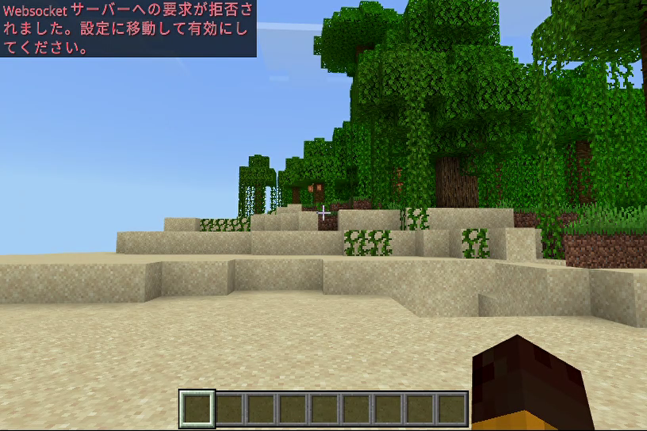
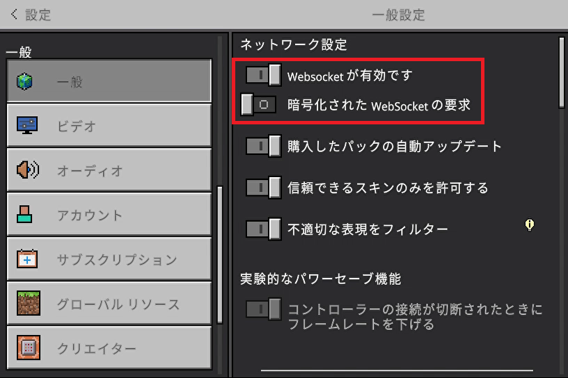
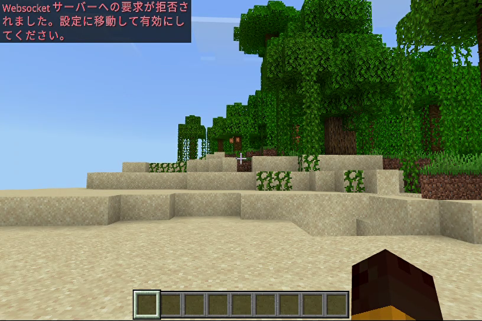
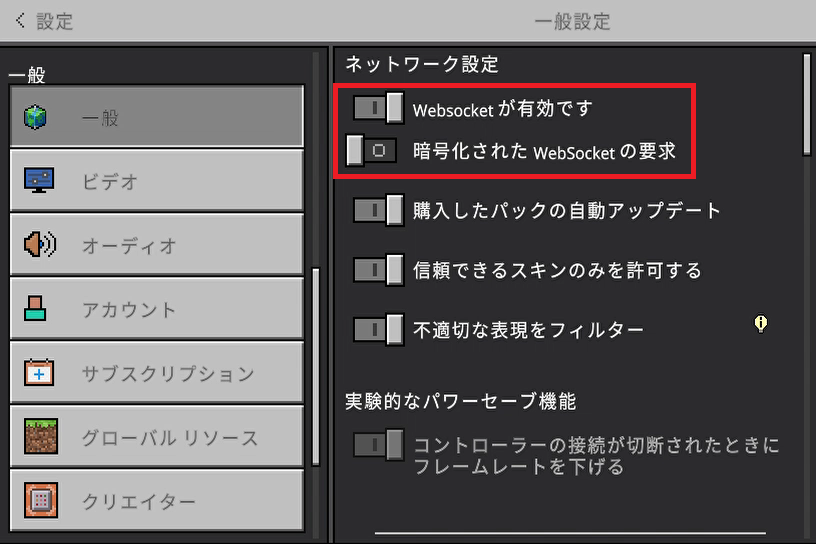

【マインクラフトの環境】
はじめに
ここではWebsocketサーバーと連携できる統合版マインクラフトを使った運用を前提としています。
この環境でのWebsocketサーバーの役割はWebブラウザとの橋渡しとマインクラフトのイベント処理がメインなので、ワールドの処理負担を回避しつつサーバープログラミングを使って極力運用の負担を減らそうというのが狙いです。
そのため以下の「なるべくしないキャンペーン四箇条」を実施しています。
サーバーフレームワークのご紹介時に利用したデモ環境は、マインクラフト（統合版）を含めたWebsocket用チャットサーバーの実装例としてご紹介していましたが、ここではマインクラフト専用のコンテンツとしてプロジェクト環境を再構築しているので別物だとお考えください。但し、この環境はデモ環境をベースに構築しているのでチャット機能はそのまま引き継いでいます。
※基本的にはファミリー向けに楽しく遊べるものを目指しているので、グローバルコンテンツや商用利用は今のところ考えていません。
この環境でのWebsocketサーバーの役割はWebブラウザとの橋渡しとマインクラフトのイベント処理がメインなので、ワールドの処理負担を回避しつつサーバープログラミングを使って極力運用の負担を減らそうというのが狙いです。
そのため以下の「なるべくしないキャンペーン四箇条」を実施しています。
- 1)コマンドブロックは使用しない
- メンテナンス性が悪いので使用しません
- 2)リピート機能は使用しない
- ワールドの負荷に直結するので使用しません（使用するにしても再帰ループ止まりにする）
- 3)座標計算はゲーム内でしない
- コマンドで計算するのは複雑になりメンテナンス性も悪いのでWebsocketサーバー側で行います
- 4)設定変更はゲーム内でしない
- ゲーム内で行うのはメンテナンス性が悪いのでWebsocketサーバー側で行います
サーバーフレームワークのご紹介時に利用したデモ環境は、マインクラフト（統合版）を含めたWebsocket用チャットサーバーの実装例としてご紹介していましたが、ここではマインクラフト専用のコンテンツとしてプロジェクト環境を再構築しているので別物だとお考えください。但し、この環境はデモ環境をベースに構築しているのでチャット機能はそのまま引き継いでいます。
※基本的にはファミリー向けに楽しく遊べるものを目指しているので、グローバルコンテンツや商用利用は今のところ考えていません。
プロジェクト環境
マインクラフト用のプロジェクト環境は以下のコマンドでインストールできます。
※GitHubから直接ダウンロードする場合は>> こちらからどうぞ。
インストールコマンド
インストール後のディレクトリ構成は以下のようになっています。
ディレクトリ構成
Webブラウザ用クライアントディレクトリにはデモ環境と同じくjQuery版とReact版のHTMLファイル（chat.html）が入っていますのでお好きな方をブラウザにドラッグ＆ドロップしてお使いください。
専用コンテンツを有効にするためにはマインクラフトワールドデータ（ビヘイビアパック／リソースパック）を更新する必要があります。
専用コンテンツの適用データはプロジェクト内の
サーバーの起動方法はデモ環境と全く同じです。
例えばマインクラフト用のWebsocketサーバーを起ち上げる場合にはプロジェクトルートで以下のようにコマンドを実行すれば起動します。
サーバーの起動（10000ポートで起動する場合）
※GitHubから直接ダウンロードする場合は>> こちらからどうぞ。
インストールコマンド
> composer create-project socket-manager/contents-project <インストール先のディレクトリ名>
インストール後のディレクトリ構成は以下のようになっています。
ディレクトリ構成
/app
/client Webブラウザ用クライアント
/jquery jQuery版
/react React版
/packs マインクラフト適用データ
/behavior_packs ビヘイビアパック
/resource_packs リソースパック
/InitClass 初期化クラス
/UnitParameter UNITパラメータクラス
/ProtocolUnits プロトコルUNIT定義クラス
/CommandUnits コマンドUNIT定義クラス
/MainClass メイン処理クラス
/logs ログ出力用
/setting 設定ファイル用
Webブラウザ用クライアントディレクトリにはデモ環境と同じくjQuery版とReact版のHTMLファイル（chat.html）が入っていますのでお好きな方をブラウザにドラッグ＆ドロップしてお使いください。
専用コンテンツを有効にするためにはマインクラフトワールドデータ（ビヘイビアパック／リソースパック）を更新する必要があります。
専用コンテンツの適用データはプロジェクト内の
app/packsディレクトリにビヘイビアパック／リソースパックを同梱していますので、このディレクトリの中身をそのまま統合版ゲームデータのbehavior_packsやresource_packsディレクトリにコピーしてお使いください（適用方法の詳細は<< こちら）。サーバーの起動方法はデモ環境と全く同じです。
例えばマインクラフト用のWebsocketサーバーを起ち上げる場合にはプロジェクトルートで以下のようにコマンドを実行すれば起動します。
サーバーの起動（10000ポートで起動する場合）
> php worker app:minecraft-chat-server 10000
マインクラフトからの接続
マインクラフトはUWPアプリのためlocalhost（127.0.0.1）で利用する場合は以下のコマンドを実行してループバックアドレスへのアクセスを許可しておく必要があります。
ループバックアドレス許可の設定
マインクラフトからWebsocketサーバーへ接続する時はチャット画面で以下のように入力します。
入力書式（10000ポートに接続する場合）
上記のユーザー名はマインクラフト内のユーザー名でなくても構いません。
あくまでWebsocketサーバー内で使用する名前です。

接続が完了すれば画面左上に上記のようなメッセージが表示されます。
接続後は左メニューのCONTENTSの項目でご紹介している機能が使えるようになります。
ループバックアドレス許可の設定
> CheckNetIsolation.exe LoopbackExempt -a -n="Microsoft.MinecraftUWP_8wekyb3d8bbwe"
マインクラフトからWebsocketサーバーへ接続する時はチャット画面で以下のように入力します。
入力書式（10000ポートに接続する場合）
> /wsserver localhost:10000/<ユーザー名>
上記のユーザー名はマインクラフト内のユーザー名でなくても構いません。
あくまでWebsocketサーバー内で使用する名前です。
接続が完了すれば画面左上に上記のようなメッセージが表示されます。
接続後は左メニューのCONTENTSの項目でご紹介している機能が使えるようになります。
接続に失敗する場合
Websocketサーバーに接続しようとすると以下のエラーが出る事があります。

そんな時は以下の赤枠部分と同じ設定にしてください。


そんな時は以下の赤枠部分と同じ設定にしてください。
